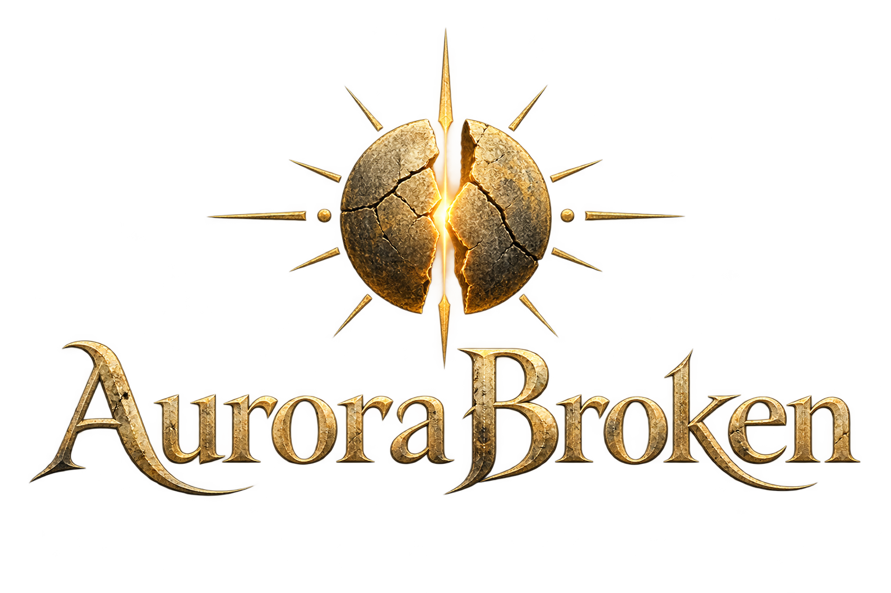

O rei roubou a aurora. Você carrega a última brasa.
Liberte os guardiões do Jardim, atravesse o selo e devolva a luz à Cidadela. Toda queda deixa uma brasa. Toda brasa, um recomeço.
Carregando endereços da rede local…
Malênio guardava o Sol da Aurora. Quando a noite levou sua família, ele partiu o astro e prendeu a manhã na Cidadela, prometendo que nada mais mudaria. Sem aurora, as lembranças viraram cinza.
Você é um Portador: alguém capaz de devolver calor às memórias. O Guerreiro carrega a lâmina dos antigos vigias. A Feiticeira aprendeu a ouvir as brasas que ainda cantam.
Derrote os três guardiões do Jardim. O portal ao norte leva à Cidadela; o portal ao sul permite voltar. Fogueiras restauram a vida. I abre equipamentos; Q usa a técnica da arma; F lança um projétil. Complete o Jardim para liberar o segundo conjunto de armadura e derrote Malênio para obter o terceiro. Guardiões vencidos permanecem vencidos. No cooperativo, a jornada e os inimigos são compartilhados na sala.
Espaço: ataque na direção em que você olha. Saia das áreas marcadas antes do impacto. Shift: esquiva com breve invulnerabilidade. R: renascer após cair. F3: visualizar colisões.
Os guardiões derrotados não retornam. Reúna suas forças na fogueira.
O Custódio entrega a primeira brasa. As runas libertam a aurora da cripta e a luz atravessa a Cidadela. O reino finalmente pode seguir em frente.
Nenhuma partida ativa.
Novas jornadas e arquivos importados criam saves separados. O autosave atualiza somente a campanha em andamento. Exporte o arquivo para levar o progresso a outro PC.
Entre em uma sala para salvar ou exportar sua campanha cooperativa.
A sala salva automaticamente no servidor a cada 5 segundos e ao sair. Só seu criador, sozinho na sala, pode restaurar um arquivo. Crie outro código de sala para uma campanha separada.
Espaço: ataque básico. Q: técnica da arma (30 energia). F: projétil perfurante (40 energia). A energia se regenera durante a exploração. Peças podem ser combinadas individualmente.